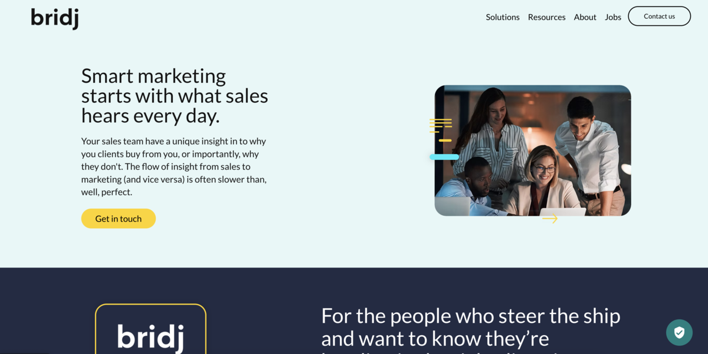

Building an AI marketing intelligence platform from the ground up. Tech leadership for a UK startup turning real sales conversations into campaigns that convert.

Full technical leadership from day one. Architecture decisions, team mentoring, and hands-on development.
System design from scratch. Technology selection, scalability planning, and infrastructure decisions that set the foundation for growth.
Code reviews, mentoring junior developers, sprint planning, and setting technical direction. Building the team alongside the product.
Not just strategy - hands on the keyboard. Core AI/ML pipeline, backend architecture, API design, and third-party integrations.
An AI platform that turns raw sales conversations into marketing gold.
Ingesting real sales calls and extracting themes, pain points, objections, and buying signals. Unstructured audio becomes structured market intelligence.
Turning conversation insights into actionable marketing campaigns. The AI identifies messaging that resonates and suggests campaigns based on real customer language.
Dashboard showing conversation trends, emerging opportunities, competitive mentions, and risk signals. Updated as new conversations are processed.
End-to-end processing of unstructured conversation data into structured, actionable insights. From raw audio to tagged themes, sentiment analysis, and campaign recommendations - all automated.
Connecting existing sales and marketing tools. CRM sync, marketing platform integrations, and webhook-based automation for seamless workflow.
We embed as your tech lead. Architecture, team building, hands-on development - whatever your startup needs to ship.